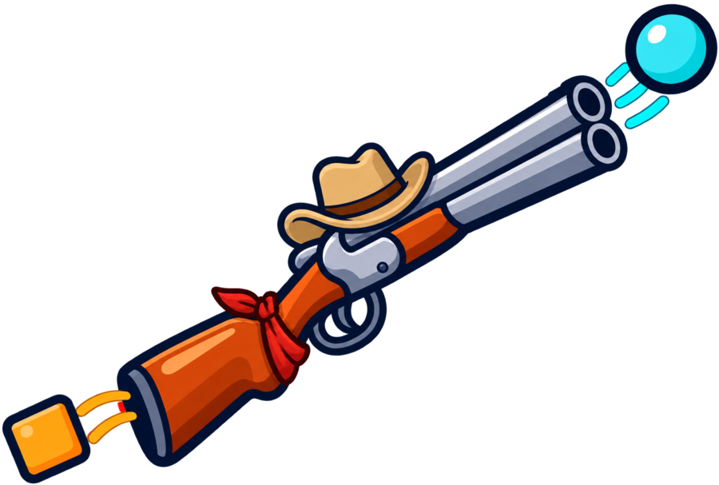

[settings]
# prepended to every target path
target_base_path = "/api/v1"
# stripped from the request before matching
source_base_path = "/api/v3"
# "reject" (501) or "passthrough"
unmapped_endpoint_behavior = "reject"
# "passthrough" / "drop" / "drop_unknown"
unmapped_field_behavior = "passthrough"
[settings.pagination]
source_style = "link_header"
target_style = "link_header"
rewrite_link_urls = true
[settings.pagination.param_map]
per_page = "limit"
OpenAPI → OpenAPI translation proxy
Turn any REST API into the shape of another.
Shotgun is a reverse proxy generator for OpenAPI specs.
The idea
APIs in the same domain already share most of their shape.
Git forges, payment processors, and CMS platforms usually share 60 to 80 percent of their structure. Shotgun maps the obvious parts and leaves you a checklist for the rest.
Client thinks it's calling
GET /repos/{owner}/{repo}/issues/{issue_number}
gh, Renovate, and CI scripts run unmodified.Shotgun rewrites
path_params · renames · defaults · drops
Driven by
mappings.toml. Nothing guessed at runtime.Upstream gets
GET /api/v1/repos/{owner}/{repo}/issues/{index}
The response comes back in the shape the client expected.
Quick start
Two commands and one edit get you a proxy.
Diff, review, serve. When a spec changes, re-diff without losing your edits.
01
Diff the specs
shotgun init matches endpoints and fields, then writes a mappings.toml. It leaves blank anything it can't resolve.
02
Fill in the gaps
Anything left as target = "" is your todo list. Mark what you touch edited = true to protect it from sync.
03
Serve it
Point --target-url at the upstream. Clients keep speaking the source API's shape.
# 1. Diff two specs and generate a mapping file shotgun init --source github-api.json --target forgejo-api.json --output mappings.toml # 2. Review mappings.toml, fill in anything left as target = "" # 3. Run the proxy shotgun serve --mappings mappings.toml --target-url https://forgejo.example.com # 4. Clients call Shotgun in the GitHub shape; it translates on the fly curl http://localhost:8080/repos/owner/repo # When specs change, re-diff without losing your edits. shotgun sync --source github-api-v2.json --target forgejo-api-v2.json --mappings mappings.toml # Check a mapping file for problems shotgun validate --mappings mappings.toml
Matching
Shotgun only maps what it can prove.
It guesses nothing at request time. When it can't prove a match, it leaves the entry unmapped and says so.
/Endpoints
Shotgun matches on path and HTTP method, ignoring {param} names. If that misses, it tries operationId. Anything left over stays unmapped.
=Fields
A field maps when the name matches exactly and the type fits. If the types clash, Shotgun flags it and forces nothing.
↺Renames
Shotgun never writes one. You write every rename, then mark it edited = true so sync leaves it alone.
+Defaults and drops
A field that only one side has becomes a default holding a zero value, or a drop that clients never see.
⌥Nested schemas
Shotgun diffs a User inside a Repository once. It reuses that map every time the type shows up, through a named [[schemas]] entry.
»Pagination
Shotgun remaps query params between the two styles. It also rewrites Link header URLs to point back at the proxy.
mappings.toml
One file you can read in a diff.
The whole translation lives in one TOML file. You can review it, version it, and mark
entries edited = true so a later sync skips them.
[[endpoints]]
source = "GET /repos/{owner}/{repo}/issues/{issue_number}"
target = "GET /repos/{owner}/{repo}/issues/{index}"
edited = true # sync will not overwrite this
[endpoints.path_params]
issue_number = "index"
[endpoints.response.renames]
number = "index" # humans write these, never the diff
[endpoints.response.defaults]
draft = false # source-only field, synthesized
labels = []
[endpoints.response]
drops = ["due_date"] # target-only, hidden from clients
[[endpoints.response.nested]]
path = "user"
schema_map = "User" # reuse a [[schemas]] entry[[schemas]]
name = "User"
edited = true
[schemas.renames]
login = "username"
[schemas.defaults]
site_admin = false# No target equivalent exists; returns 501 at runtime
[[endpoints]]
source = "POST /repos/{owner}/{repo}/issues/{issue_number}/lock"
target = ""
note = "Forgejo has no issue locking API"
# Same name, incompatible types; flagged, left untouched
[endpoints.response.type_conflicts]
reactions = "object vs array"
Flagship use case
Anvil points GitHub tooling at Forgejo.
Anvil is a curated mappings.toml on top of this proxy. It lets GitHub tools like
gh, Renovate, and CI scripts talk to a self-hosted Forgejo instance with no
client-side changes.
It drives Shotgun's work against real specs, not toy ones.
What that exercises
- A client that hardcodes a base path it doesn't own (
/api/v3/…) - Path params that disagree (
issue_numbervsindex) - Method changes across the same resource (
PUT→PATCH) - Fields one side has and the other doesn't, in both directions
- Query params and Link headers translated between two pagination conventions
The core works, but this is not a finished product.
Shotgun handles OpenAPI 3.0/3.1 and Swagger 2.0, and the proxy runs. Anvil is hardening it against real specs. MIT licensed.
MIT · built with Rust + axum